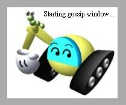

在應用程式啟動時，可以顯示啟動畫面（Splash Screen）來顯示應用程式目前的啟動進度，這可以使用QSplashScreen來達成，您可以簡單的顯示一個圖片與訊息，或是更複製的製作進度列來顯示目前應用程式的載入進度。
下面這個程式以 QMdiArea 為基礎，為其加上啟動畫面：
#include <QApplication>
#include <QMdiArea>
#include <QMainWindow>
#include <QTextEdit>
#include <QMenuBar>
#include <QAction>
#include <QToolBar>
#include <QStatusBar>
#include <QDockWidget>
#include <QLabel>
#include <QPixmap>
#include <QSplashScreen>
int main(int argc, char *argv[]) {
QApplication app(argc, argv);
QSplashScreen *splash = new QSplashScreen;
splash->setPixmap(QPixmap("caterpillar.jpg"));
splash->show();
splash->showMessage("Starting gossip window...",
Qt::AlignRight | Qt::AlignTop, Qt::black);
QMainWindow *mainWindow = new QMainWindow;
// ... 中間相同
mainWindow->show();
splash->finish(mainWindow);
delete splash;
return app.exec();
}QSplashScreen可以使用show()方法顯示出來，showMessage()可以設定訊息顯示，並可以指定訊息顯示的位置，在程式中設定顯示在右上角，訊息文字為黑色。
您可以使用QSplashScreen的close()方法關閉啟動畫面，若使用finish()方法，則會在所指定的元件顯示出來之後，才關閉啟動畫面，由於啟動畫面不再需要，所以最後使用delete將之從記憶體中刪除以釋放記憶體空間。
下圖為啟動畫面擷圖：
